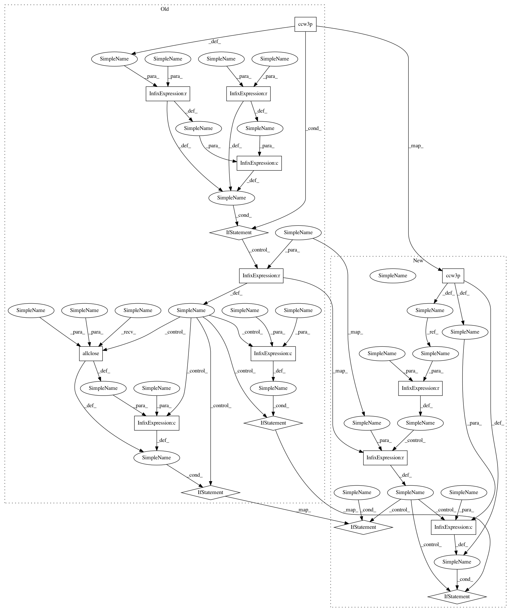

b9ca6f315a1d181feaba5e08ef9109919ac04d5e,pyroomacoustics/geometry.py,,intersection2DSegments,#,82
Before Change
if (b2.shape[0] != 2):
raise NameError("utilities.intersection2DSegments input error : b2 is a ndarray of size 2")
if (ccw3p(a1,a2,b1) != ccw3p(a1,a2,b2) and ccw3p(b1,b2,a1) != ccw3p(b1,b2,a2)):
da = a2-a1
db = b2-b1
dap = np.empty_like(da)
dap[0] = -da[1]
dap[1] = da[0]
denom = np.dot(dap, db)
if denom != 0:
dp = a1-b1
num = np.dot(dap, dp)
p = np.array((num / denom.astype(float))*db + b1)
if (np.allclose(p, a1) or np.allclose(p, a2)):
endpointA = True
else:
endpointA = False
if (np.allclose(p, b1) or np.allclose(p, b2)):
endpointB = True
else:
endpointB = False
return p, endpointA, endpointB
return None, False, False
def intersectionSegmentPlane(a1, a2, p, normal):
After Change
// case 2
b1b2a1 = ccw3p(b1, b2, a1)
b1b2a2 = ccw3p(b1, b2, a2)
if b1b2a1 == b1b2a2:
return None, False, False
da = a2-a1
db = b2-b1
dap = np.empty_like(da)
dap[0] = -da[1]
dap[1] = da[0]
denom = np.dot(dap, db)
// case 3
if denom == 0:
return None, False, False
// At this point, we know there is intersection
dp = a1-b1
num = np.dot(dap, dp)
// This is the intersection point
p = np.array((num / denom.astype(float))*db + b1)
// Test if intersection is actually at one of a1 or a2
if b1b2a1 == 0 or b1b2a2 == 0:
endpointA = True
else:
endpointA = False
// Test if intersection is actually at one of b1 or b2
if a1a2b1 == 0 or a1a2b2 == 0:
endpointB = True
else:
endpointB = False
return p, endpointA, endpointB
In pattern: SUPERPATTERN
Frequency: 4
Non-data size: 17
Instances
Project Name: LCAV/pyroomacoustics
Commit Name: b9ca6f315a1d181feaba5e08ef9109919ac04d5e
Time: 2017-02-13
Author: fakufaku@gmail.com
File Name: pyroomacoustics/geometry.py
Class Name:
Method Name: intersection2DSegments
Project Name: LCAV/pyroomacoustics
Commit Name: b9ca6f315a1d181feaba5e08ef9109919ac04d5e
Time: 2017-02-13
Author: fakufaku@gmail.com
File Name: pyroomacoustics/geometry.py
Class Name:
Method Name: intersection2DSegments